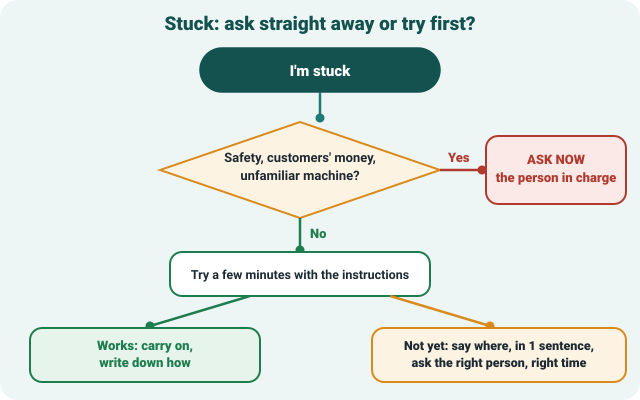

K3 · Problem solving and decision making › Level 1 Exploring
Say exactly where you are stuck, and ask the right person at the right time
A Level 1 (Beginner) lesson. The next lesson, at Level 2: Describe a problem and propose two options.
1. Objectives
- Say where you are stuck in 1 sentence: what you are doing, and which step is blocking you.
- Choose the right person and the right time to ask for help.
2. Retrieval warm-up
- What are the three habits for listening to an instruction?
- What should you do with an instruction longer than 3 steps?
Answers
- Stop and look at the speaker; listen to the end; repeat back in order.
- Write it down at once in a notebook or on your phone.
3. Explanation
New people often make one of two mistakes. The first: struggling in silence for too long because they feel shy about asking. The second: asking about everything at once, even things they could find themselves.
Both slow the work down. A balanced approach has three steps.
Three steps when you are stuck
- Try once yourselfLook again at the instructions, an existing example, or your own notes.
- Say exactly where you are stuckOne sentence: what you are doing, and which step is blocking you.
- Ask the right person, at the right timeThe person responsible for that task, when they are not busy with something urgent.
Step 1. Try once yourself. Before asking, spend a few minutes checking the instructions or an example. If it still does not work, stop and ask. Do not struggle for the whole morning.
There is one important exception. For anything about safety, customers' money, or machines you do not know, ask straight away. Do not try on your own.
Step 2. Say exactly where you are stuck. "I don't know how to do it" makes the other person ask you several questions. Be specific:
| Unclear | Clear |
|---|---|
| "I don't know how to use this machine." | "I'm printing a receipt and it says paper error, but I just put in a new roll." |
| "I can't do it." | "I'm entering the order, and it won't save when I get to the address box." |
Step 3. Ask the right person, at the right time. The right person is whoever is responsible for the task, or whoever showed you how to do it. The right time is when they are not serving a customer or dealing with something urgent. If your question is urgent, say so: "Sorry, I need to ask something urgent."
Once you get help, write down how to do it so you can do it alone next time. And remember to say thank you.

4. Workplace example
Hypothetical scenario. Hana is an intern in the admin office of a small company. She is asked to send a meeting invitation to 20 people.
Hana writes the invitation but does not know where to find the email list. She does this:
- She looks in the shared folder her supervisor showed her. It is not there.
- She waits until her supervisor, Grace, finishes a meeting, then asks: "I've written the invitation. I can't find the email list for the 20 people. Where should I look?"
- Grace points to the file. Hana writes the file location in her notebook and says thank you.
Why this works: Hana tries first, asks the right person, chooses a time when Grace is free, and says where she is stuck in one sentence.
5. Practice
Hypothetical scenario. You work part-time at the till in a mini-market. A customer wants to exchange a packet of biscuits they have already paid for. You have never done an exchange on the till.
Write what you would say to the shift leader.
Hint 1
This involves a customer's money. Should you ask straight away or try first?
Hint 2
Your question should say: what you are doing, where you are stuck, and that a customer is waiting.
Model answer
Ask straight away, because it involves a customer's money. "Sorry, a customer wants to exchange some biscuits they've paid for. I don't know how to do an exchange on the till. Could you show me? The customer is waiting at the counter."
6. Self-check
Choose an answer. Every option has an explanation.
Question 1. Which sentence says most clearly where you are stuck?
-
Not quite. It does not say what you were doing or at which step the problem happened.
-
Correct. Correct. It gives the task and the exact symptom, so the listener sees the problem at once.
-
Not quite. This does not tell the helper where help is needed.
Question 2. You smell burning from a coffee machine you are not used to. What do you do?
-
Not quite. For safety issues and unfamiliar machines, do not try on your own.
-
Correct. Correct. For safety, ask straight away. Do not try first.
-
Not quite. A burning smell can be dangerous. Report it at once.
Question 3. You do not remember how to name the report file. The instructions were posted in the team chat. What should you do first?
-
Not quite. The instructions already exist. Looking first saves your manager's time.
-
Correct. Correct. Try once with the material you have. If that fails, ask.
-
Not quite. A wrong file name makes it hard for others to find the file.
Question 4. Your manager is handling a customer complaint. Your question is not urgent. What do you do?
-
Not quite. Interrupting while they handle a customer is disruptive. A non-urgent question can wait.
-
Correct. Correct. Choose a time when the other person is not busy with something urgent.
-
Not quite. If you do not ask, you stay stuck. Just choose another time.
7. Reflection
- Which mistake do you make more often: being too shy to ask, or asking too soon?
- At your workplace or school, who should you ask about each kind of task?
8. Real-world application
Over the next 7 days, each time you need help, say where you are stuck in 1 sentence. Then write down how to do it in your notebook. At the end of the week, count how many tasks you can now do alone.
9. Metadata
| skill | K3 · Problem solving and decision making |
|---|---|
| level | Level 1 · Exploring |
| group | N2 |
| framework_map | WEF: Analytical thinking; CSfW: 3b Make decisions; 3c Identify and solve problems; SkillsFuture CCS: Problem Solving; NACE: Critical Thinking (reference only) |
| original | Vietnamese version |
| updated | 2026-11-14 |
Finish the lesson
Mark it as done and the site suggests reviews after 1, 3 and 7 days. The data stays on your device only.
Suggested reviews: